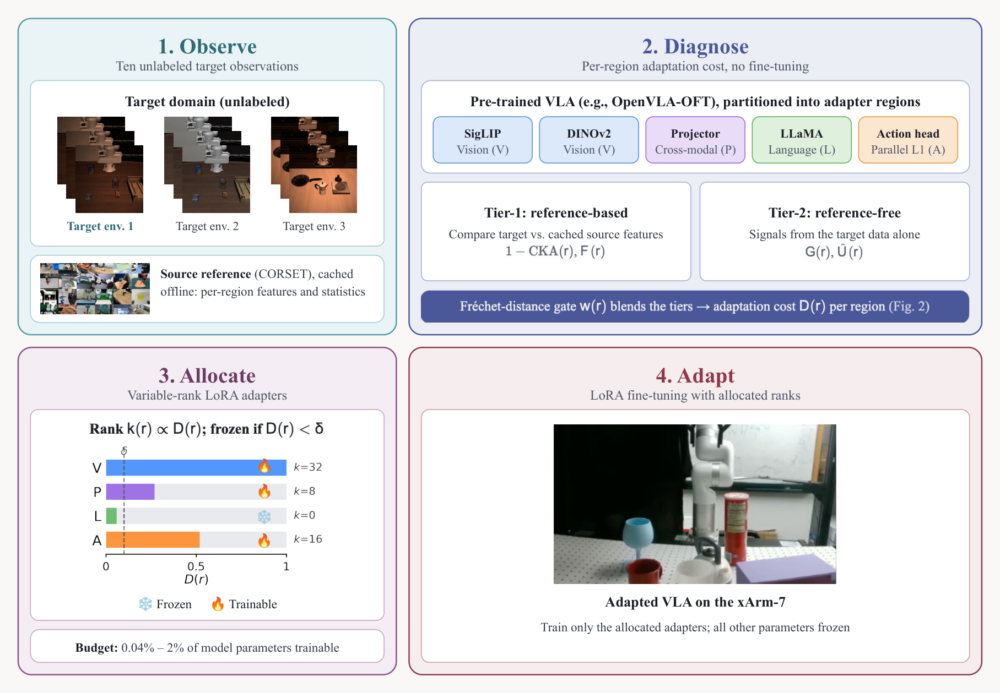
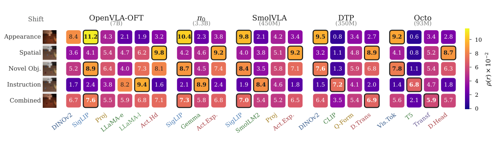
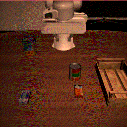
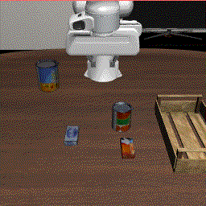
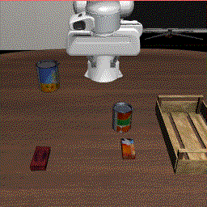
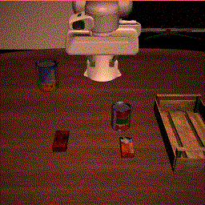
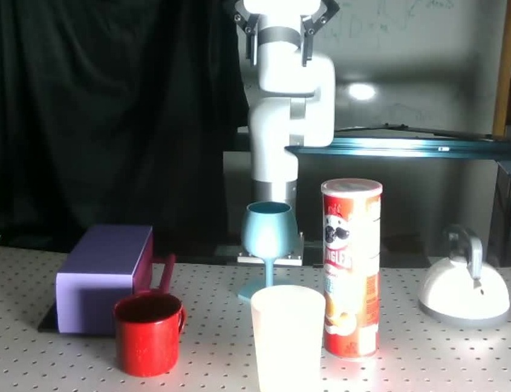

Abstract
Fine-tuning a Vision-Language-Action (VLA) model for a new deployment environment is expensive, yet most methods apply uniform-capacity adapters to every network region as if every region requires equal adjustment. This paper tests that assumption on five architecturally diverse VLAs (OpenVLA-OFT, π0, SmolVLA, DTP, Octo; 93M–7B parameters). Measuring per-region adaptation cost as normalized parameter displacement under region-isolated fine-tuning reveals an adaptation spectrum in which appearance shifts concentrate cost in the vision encoder, instruction shifts in the language backbone, and novel-object shifts in the vision encoder together with the action head, consistently across all five architectures in our experiments.
To exploit this structure, we introduce a pipeline that observes, diagnoses, allocates, and adapts. From ten unlabeled target observations and without fine-tuning, the diagnostic estimates per-region cost; the allocator converts those estimates into variable-rank Low-Rank Adaptation (LoRA) adapters under a parameter budget and freezes well-calibrated regions. In our experiments, the diagnostic ranks regions within each deployment at a median Spearman of 0.91, and the allocation matches or exceeds uniform LoRA at every budget we tested on LIBERO and CALVIN. On a physical xArm-7, the pipeline matches full fine-tuning under an instruction-wording shift with 0.04% of its trainable parameters, and on five held-out scenes evaluated without retraining it leads every baseline, with 11–23 successes of 30 rollouts against 8–18 for the strongest parameter-efficient baseline and 2–11 for full fine-tuning. These results suggest that adaptation cost in VLAs is structured enough to measure before fine-tuning begins.
Method
The pipeline runs four stages in order. The observe stage collects a small set of unlabeled target observations at the deployment site. The diagnose stage maps the frozen policy and those observations to per-region scores D(r) ∈ (0, 1] using a comparison tier against a cached source reference and a reference-free tier, blended by a per-region Fréchet gate. The allocate stage converts the scores into a LoRA rank assignment k(r) under a trainable-parameter budget, proportional to D(r) and zero below a freezing threshold. The adapt stage trains those adapters on a small demonstration set. Each stage runs once per deployment, and only the adapt stage updates parameters.
We partition each VLA along its native module boundaries into functional regions (vision encoder, language backbone, cross-modal projectors, action head, and related modules). Adaptation cost is measured, and adapters are attached, per region. The reference cost used to evaluate the diagnostic is the per-region adaptation cost ρ(r), the normalized parameter displacement induced by region-isolated fine-tuning on the target demonstrations while holding all other regions fixed. A small ρ(r) indicates that the pretrained parameters of region r already suffice for the shift. The diagnostic is trained to recover the rank order of {ρ(r)} within a deployment from the unlabeled observations alone.
When the domain gap is small, the comparison tier scores representational shift with Centered Kernel Alignment (CKA) against the cached source activations, weighted by parameter sensitivity. When the gap is large, a reference-free tier profiles size-normalized gradient norms of a label-free surrogate loss, and, for dropout-trained models, Monte Carlo Dropout activation variance. The Fréchet gate decides how much each region trusts each tier. The allocator then spends the budget where D(r) is high and freezes regions that appear well calibrated.

Fig. 1. Observe → diagnose → allocate → adapt. The diagnostic estimates per-region cost from unlabeled target observations; the allocator places variable-rank LoRA under a budget.
Adaptation spectrum
Heatmaps of per-region adaptation cost ρ(r), the normalized parameter displacement under region-isolated fine-tuning. Appearance shifts concentrate cost in the vision encoder, instruction shifts in the language backbone, and novel-object shifts in vision together with the action head, consistently across architectures.





Simulation rollouts
Adaptive allocation after diagnosis on OpenVLA-OFT under controlled deployment shifts.
Physical robot
Appearance shift (lighting, textures). Adapt on Scene A, evaluate held-out Scene B without retraining · 0.493% of parameters.

Results
diagnostic ranking
decoding paradigms
on instruction shift
leads every baseline
BibTeX
@article{syed2026adaptspectrum,
title = {Not All Layers Need Tuning: Diagnosing and Directing Adaptation in Vision-Language-Action Models},
author = {Syed, Shahram Najam and Jakobsson, Arthur and Sachdev, Prayuj and Ichnowski, Jeffrey},
journal = {arXiv preprint arXiv:2609.18084},
year = {2026}
}